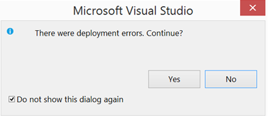
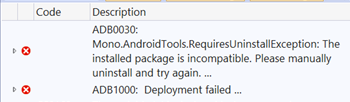
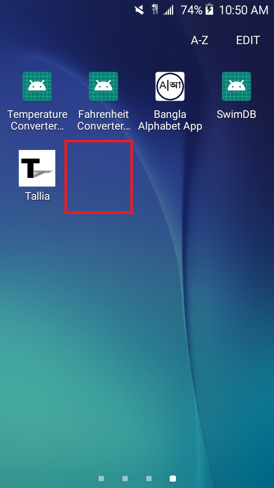
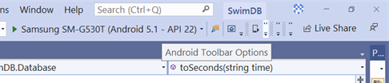
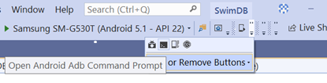
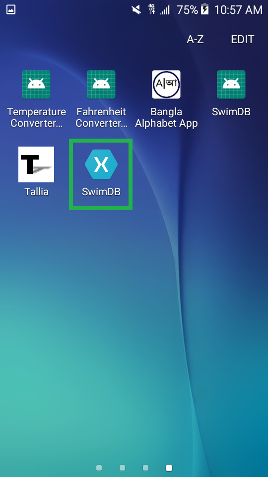

Xamarin Visual Studio Help:
ADB0030: Mono.AndroidTools.
RequiresUninstall
Exception
Abir Haque, July 24, 2020
Developers often receive such an exception when people sign a Xamarin APK, debug the project, and then attempt to rebuild the project in a debug state. When such an exception occurs, Visual Studio hauntingly greets developers with the following dialogue box:

In addition, two of errors are present:

Addressing the first error is imperative, as the latter will disappear alongside the first.
Some developers may be confused on what a "manual uninstall" is. The first move these developers make is to uninstall the project from their smartphone's Apps pages, then redeploy the project. However, developers may find this option seemingly impossible, as their project disappeared from the Apps page.

However, there is one workaround to this. The following instructions are perfect for Xamarin developers of the Visual Studio Community 2019 edition using Windows 8.1. Other Visual Studio users still may find this page of great use.
Note: If you are comfortable with using the command line, or your IDE's arrangement does not match this tutorial, please start at Step 3.
1. Go to the top right corner of Visual Studio, and click the "Android Toolbar Option" menu.

2. Click on the console icon labeled "Android Adb Command Prompt".

3. Clicking the icon navigates you to your project's directory via command line.
If you opted to skip Steps 1 and 2, please open your system's command line, and enter the following, with the command format matching your operating system and your information filled in:
cd PATH_TO_PROJECT\PROJECT_NAME \PROJECT_NAME.Android
4. Enter the following, with your information filled in:
adb uninstall com.COMPANY_NAME.PROJECT_NAME
5. You will receive great news. You may now close the command line.
6. Build and deploy your project to a connected Android device.
7. Congratulations! XAML Hot Reload is connect, so you should see your project up and running on your device!

Sources:
https://docs.microsoft.com/en-us/xamarin/android/errors-and-warnings/adb0030
https://christophweigert.com/fix-visual-studio-mono-androidtools-requiresuninstallexception/